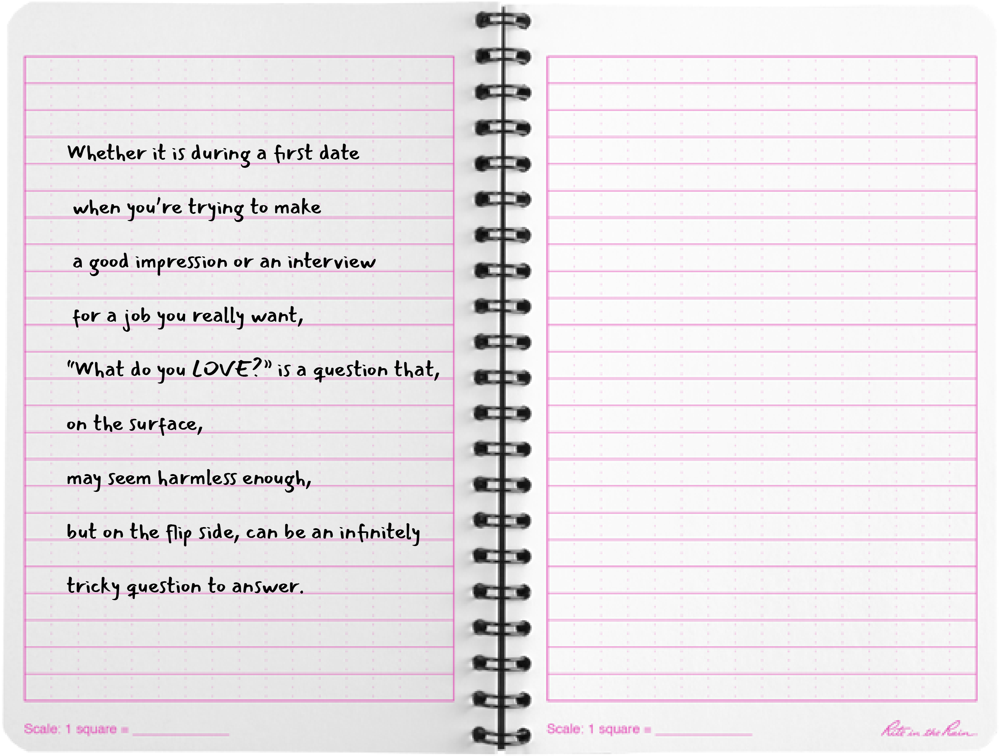

About
Work
close ×
Title: Identity
This short work depicts my ongoing struggle
to figure out who I am. I think that the process of self discovery is the hardest, yet one of the most meaningful journeys in our lives.
Pieces of Us
From Julie

Previous
|
Next